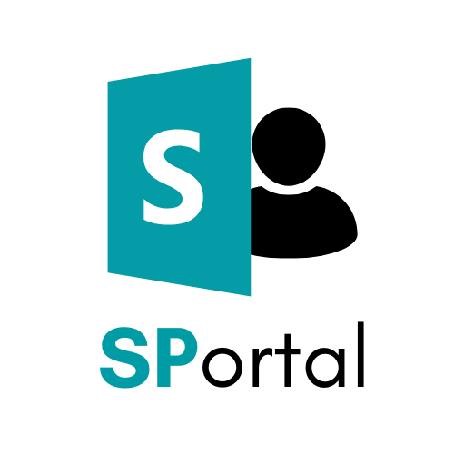

<!DOCTYPE html>
<html lang="en">
<head>
  <meta charset="UTF-8">
  <meta name="viewport" content="width=device-width, initial-scale=1.0">
  <title>SPortal - SharePoint Intranet Portal Demo</title>
  <link rel="icon" type="image/x-icon" href="logos/favicon.ico.png">
  <link rel="apple-touch-icon" href="logos/favicon.ico.png">
  <meta name="theme-color" content="#008c96">
  <link href="https://fonts.googleapis.com/css2?family=Inter:wght@400;600;700&family=Segoe+UI:wght@400;700&display=swap" rel="stylesheet">
  <style>
    :root{
      --sp-blue: #008c96;
      --sp-cyan: #00b7c3;
      --sp-green: #107C10;
      --sp-bg: #f6f7f8;
      --sp-surface: #ffffff;
      --sp-muted: #6b6b6b;
      --text: #222222;
      --card-border: #e6e6e6;
      --glass: rgba(255,255,255,0.6);
      --nav-height:64px;
      --radius:10px;
    }
    *{box-sizing:border-box}
    html{scroll-behavior:smooth}
    body{margin:0;font-family:Inter, 'Segoe UI', system-ui, -apple-system, BlinkMacSystemFont, Roboto, sans-serif;background:var(--sp-bg);color:var(--text);-webkit-font-smoothing:antialiased}

    /* Links and interactive reset */
    a{color:var(--sp-blue);text-decoration:none;transition:color .16s ease,transform .12s ease}
    a:visited{color:var(--sp-blue)}
    a:focus{outline:2px solid rgba(0,120,212,0.12);outline-offset:2px;border-radius:6px}
    /* Remove tap highlight on mobile */
    a,button,.nav-toggle,.nav-logo,nav .container a,footer a.footer-link,.btn{-webkit-tap-highlight-color:transparent;-webkit-user-select:none;user-select:none}

    .container{max-width:1100px;margin:0 auto;padding:0 20px}

    /* Header */
    header{background:linear-gradient(180deg, rgba(255,255,255,0.8), rgba(255,255,255,0.6));backdrop-filter:saturate(120%) blur(4px);padding:26px 0 12px;border-bottom:1px solid var(--card-border)}
    .sp-logo{width:48px;height:48px;border-radius:8px;background:#fff;object-fit:cover;transition:transform .18s ease,box-shadow .18s ease;cursor:pointer}
    header .meta{display:flex;align-items:center;gap:14px;justify-content:center}
    header h1{margin:0;font-size:1.35rem;color:var(--text);font-weight:700}
    .brand-accent{color:var(--sp-blue);font-weight:800;letter-spacing:-0.6px}
    header p{margin:8px 0 0;color:var(--sp-muted);font-size:.95rem;max-width:760px}
    .tech-badges{display:flex;gap:8px;flex-wrap:wrap;justify-content:center;margin-top:10px}
    .tech-badge{background:rgba(0,140,150,0.06);color:var(--sp-muted);padding:6px 10px;border-radius:999px;font-size:.82rem;border:1px solid var(--card-border)}

    .btn{display:inline-flex;align-items:center;gap:8px;padding:8px 12px;background:var(--sp-blue);color:#fff;border-radius:12px;font-weight:700;font-size:.95rem;border:0;transition:transform .14s ease,box-shadow .14s ease,filter .12s ease}
    .btn svg{width:16px;height:16px;fill:currentColor;color:inherit}
    .btn:hover{transform:translateY(-2px);box-shadow:0 10px 24px rgba(0,0,0,0.08);filter:brightness(.98)}
    .btn:focus{outline:2px solid rgba(0,140,150,0.14);outline-offset:3px}
    /* ensure svg icons inside non-primary links keep sensible fill/stroke */
    .footer-link svg{width:16px;height:16px;fill:currentColor}

    /* Top nav */
    nav{position:sticky;top:0;background:var(--sp-surface);border-bottom:1px solid var(--card-border);z-index:180;height:var(--nav-height);display:flex;align-items:center}
    nav .nav-inner{display:flex;align-items:center;justify-content:space-between;gap:12px;width:100%}
    nav .links{display:flex;gap:8px;align-items:center}
    nav a.nav-link{color:var(--sp-muted);font-weight:600;font-size:.82rem;padding:4px 6px;border-radius:8px;text-transform:capitalize;letter-spacing:.01em}
    nav a.nav-link:hover{color:var(--sp-blue);background:rgba(0,140,150,0.04);transform:translateY(-1px)}
    /* hide toggle by default (desktop) - will be shown explicitly at mobile breakpoints */
    .nav-toggle{display:none !important;background:transparent;border:0;padding:8px;border-radius:8px;cursor:pointer}
    .nav-toggle svg{width:20px;height:20px;color:var(--sp-muted);display:block}
    .nav-logo{display:inline-flex;align-items:center;gap:8px;opacity:0;visibility:hidden;transition:opacity .18s,transform .18s}
    .nav-logo{width:0;overflow:hidden}
    nav.scrolled .nav-logo{opacity:1;visibility:visible;width:auto}
    .nav-logo img{width:36px;height:36px;display:block;border-radius:6px;transition:transform .18s ease,box-shadow .18s ease;cursor:pointer}
    nav.scrolled .nav-logo img{width:44px;height:44px}
    /* hover/active effects for logos */
    .sp-logo:hover, .nav-logo img:hover{transform:scale(1.08)}
    .sp-logo:active, .nav-logo img:active{transform:scale(1)}
    /* hide mobile dropdown by default (prevent desktop layout shift) */
    .nav-dropdown{display:none}
    /* ensure nav inner takes full nav height and centers children */
    nav .nav-inner{height:100%;align-items:center}
    nav .nav-inner > *{display:flex;align-items:center}

    /* Section & features */
    section{padding:22px 0;border-bottom:1px solid var(--card-border)}
    section h2{font-size:.98rem;margin:0 0 8px;color:var(--sp-blue);display:flex;align-items:center;gap:10px;font-weight:700}
    .subtitle{color:var(--sp-muted);margin:6px 0 14px}
    .feature-grid{display:grid;grid-template-columns:repeat(auto-fit,minmax(220px,1fr));gap:12px;margin-bottom:14px}
    .feature-card{background:var(--sp-surface);border:1px solid var(--card-border);border-radius:10px;padding:12px;display:flex;gap:10px;align-items:flex-start}
    .feature-card .icon{width:44px;height:44px;border-radius:8px;flex:0 0 44px;display:flex;align-items:center;justify-content:center;background:linear-gradient(180deg,rgba(0,0,0,0.02),rgba(0,0,0,0.01));border:1px solid rgba(0,0,0,0.02)}
    .feature-card h3{margin:0;font-size:.96rem}
    .feature-card p{margin:4px 0 0;color:var(--sp-muted);font-size:.9rem}

    /* media */
    .media-grid{display:grid;grid-template-columns:repeat(auto-fit,minmax(260px,1fr));gap:14px}
    .media-item{border-radius:10px;overflow:hidden;background:var(--sp-surface);border:1px solid var(--card-border);display:flex;flex-direction:column}
    .media-frame{width:100%;aspect-ratio:16/9;display:block;background:#f0f0f0}
    .media-frame img,.media-frame video{width:100%;height:100%;object-fit:cover;display:block}
    .caption{padding:10px 12px;color:var(--sp-muted);font-size:.9rem}
    .media-images{display:grid;grid-template-columns:repeat(auto-fit,minmax(260px,1fr));gap:12px;margin-bottom:12px}
    .media-videos{display:grid;grid-template-columns:repeat(auto-fit,minmax(300px,1fr));gap:14px;margin-top:8px}
    /* carousel */
    .carousel{position:relative;overflow:hidden;border-radius:10px}
    .carousel-track{display:flex;transition:transform .32s cubic-bezier(.2,.9,.2,1);will-change:transform}
    .carousel-slide{min-width:100%;flex:0 0 100%;box-sizing:border-box;padding:0}
    .carousel-slide .media-frame{border-radius:8px}
    .carousel-controls{position:absolute;left:0;right:0;top:50%;transform:translateY(-50%);display:flex;justify-content:space-between;padding:0 8px;pointer-events:none}
    .carousel-controls button{pointer-events:auto;background:rgba(0,0,0,0.55);border:0;width:44px;height:44px;border-radius:10px;display:inline-flex;align-items:center;justify-content:center;cursor:pointer;color:#fff;font-size:20px;line-height:1;transition:transform .12s ease,box-shadow .12s ease}
    .carousel-controls button:hover{transform:translateY(-2px);box-shadow:0 10px 26px rgba(0,0,0,0.16)}
    /* strips (replaces dots) */
    .carousel-strips{display:flex;gap:8px;justify-content:center;margin-top:12px;padding:6px 8px;flex-wrap:wrap}
    /* much narrower fixed-width strips for compact appearance */
    .carousel-strip{flex:0 0 36px;width:36px;height:8px;border-radius:999px;background:rgba(0,0,0,0.08);border:1px solid rgba(0,0,0,0.06);cursor:pointer;transition:background .12s ease,transform .12s ease}
    .carousel-strip.active{background:var(--sp-blue);transform:scaleY(1.06);border-color:rgba(0,0,0,0.08)}
    /* video play overlay */
    .video-wrap{position:relative}
    .video-wrap .video-play{position:absolute;left:50%;top:50%;transform:translate(-50%,-50%);width:64px;height:64px;border-radius:999px;background:rgba(0,0,0,0.6);display:inline-flex;align-items:center;justify-content:center;color:#fff;border:0;cursor:pointer;box-shadow:0 8px 20px rgba(0,0,0,0.28);font-size:22px}
    .video-wrap .video-play svg{width:26px;height:26px}
    .video-wrap.playing .video-play{display:none}
    .carousel-header{font-size:.95rem;font-weight:700;color:var(--sp-muted);margin-bottom:8px}
    .carousel-index{position:absolute;right:10px;top:8px;background:rgba(255,255,255,0.9);padding:6px 8px;border-radius:999px;font-size:.82rem;color:var(--sp-muted);border:1px solid var(--card-border)}
    @media (min-width:900px){
      .carousel-slide{padding:12px}
    }

    /* footer */
    footer{padding:20px 0;background:var(--sp-surface);border-top:1px solid var(--card-border);color:var(--sp-muted)}
    footer .footer-line{display:flex;gap:12px;align-items:center;justify-content:center;flex-wrap:wrap}
    footer a.footer-link{display:inline-flex;align-items:center;gap:8px;padding:6px 8px;border-radius:8px;color:var(--sp-muted);font-weight:600;transition:transform .12s ease,color .12s ease,background .12s ease}
    footer a.footer-link:hover{color:var(--sp-blue);background:rgba(0,140,150,0.04);transform:translateY(-1px)}

    /* responsive */
    @media (max-width:880px){
      /* show toggle only on small screens */
      .nav-toggle{display:inline-flex !important}
      nav .links{display:none}
      /* mobile: make the nav fixed at the top so it's always visible */
      nav{position:fixed;top:0;left:0;right:0;z-index:220}
      /* avoid content being hidden under the fixed nav on mobile */
      body{padding-top:var(--nav-height)}

      /* dropdown hidden by default; only render when nav.open to avoid overlay artifacts */
      nav .nav-dropdown{display:none}
      nav.open .nav-dropdown{display:block;position:fixed;left:0;right:0;top:var(--nav-height);background:rgba(255,255,255,0.995);padding:12px;box-shadow:0 12px 40px rgba(0,0,0,0.08);z-index:170}
      /* make dropdown inert until opened */
      nav .nav-dropdown{pointer-events:none;opacity:0;transform:translateY(-6px)}
      nav.open .nav-dropdown{pointer-events:auto;opacity:1;transform:none}
      nav .nav-dropdown a{display:flex;align-items:center;gap:10px;padding:8px 6px;margin:6px 0;color:var(--sp-muted);font-weight:600;font-size:.82rem;text-transform:capitalize;border-radius:8px;transition:background .12s ease,transform .12s ease,color .12s ease}
      nav .nav-dropdown a svg{width:18px;height:18px;flex:0 0 18px}
      nav .nav-dropdown a:hover{background:rgba(0,140,150,0.04);color:var(--sp-blue);transform:translateY(-1px)}
      .nav-toggle{transition:transform .12s ease,color .12s ease}
      .nav-toggle:hover{transform:scale(1.06);color:var(--sp-blue)}
      .nav-toggle:active{transform:scale(1)}
      /* position toggle nicely in the left and keep logo centered */
      .nav-toggle{margin-left:6px}
      /* center the logo absolutely so it's always centered on mobile */
      .nav-inner{position:relative}
      .nav-logo{position:absolute;left:50%;top:50%;transform:translate(-50%,-50%);width:auto;opacity:0;visibility:hidden;transition:opacity .18s,transform .18s}
      nav.scrolled .nav-logo{opacity:1;visibility:visible}
      header .meta{flex-direction:column}
    }

    /* hide header GitHub button and only show the small nav GitHub when scrolled */
    header .meta .btn{display:none}
    /* hide any nav inline .btn by default and only reveal on scrolled */
    nav .nav-inner .btn{display:none}
    nav.scrolled .nav-inner .btn{display:inline-flex}
    @media (max-width:640px){
      header{padding:18px 0}
      header h1{font-size:1.1rem}
      .feature-card{padding:10px}
    }
    /* per-section accent variables */
    section#dashboard{--accent:var(--sp-blue)}
    section#calendar{--accent:var(--sp-cyan)}
    section#groups{--accent:var(--sp-green)}
    section#polls{--accent:var(--sp-blue)}
    section#profile{--accent:var(--sp-cyan)}
  </style>
</head>
<body>

<div id="app-root"></div>

<script>
// icons (inline SVGs mapped by section id to avoid extra asset maintenance)
const icons = {
  dashboard: `<svg width="18" height="18" viewBox="0 0 24 24" fill="none" stroke="currentColor" stroke-width="1.6" stroke-linecap="round" stroke-linejoin="round"><rect x="3" y="3" width="8" height="8" rx="1"/><rect x="13" y="3" width="8" height="8" rx="1"/><rect x="13" y="13" width="8" height="8" rx="1"/><rect x="3" y="13" width="8" height="8" rx="1"/></svg>`,
  calendar: `<svg width="18" height="18" viewBox="0 0 24 24" fill="none" stroke="currentColor" stroke-width="1.6" stroke-linecap="round" stroke-linejoin="round"><rect x="3" y="4" width="18" height="18" rx="2"/><path d="M16 2v4M8 2v4M3 10h18"/></svg>`,
  groups: `<svg width="18" height="18" viewBox="0 0 24 24" fill="none" stroke="currentColor" stroke-width="1.6" stroke-linecap="round" stroke-linejoin="round"><path d="M17 21v-2a4 4 0 0 0-4-4H9a4 4 0 0 0-4 4v2"/><circle cx="12" cy="7" r="4"/></svg>`,
  polls: `<svg width="18" height="18" viewBox="0 0 24 24" fill="none" stroke="currentColor" stroke-width="1.6" stroke-linecap="round" stroke-linejoin="round"><rect x="3" y="10" width="4" height="11" rx="1"/><rect x="10" y="6" width="4" height="15" rx="1"/><rect x="17" y="2" width="4" height="19" rx="1"/></svg>`,
  profile: `<svg width="18" height="18" viewBox="0 0 24 24" fill="none" stroke="currentColor" stroke-width="1.6" stroke-linecap="round" stroke-linejoin="round"><circle cx="12" cy="7" r="4"/><path d="M5.5 21a8.38 8.38 0 0 1 13 0"/></svg>`,
  github: `<svg width="18" height="18" fill="currentColor" viewBox="0 0 24 24"><path d="M12 2C6.48 2 2 6.58 2 12.26c0 4.48 2.87 8.28 6.84 9.63.5.09.68-.22.68-.48 0-.24-.01-.87-.01-1.7-2.78.62-3.37-1.36-3.37-1.36-.45-1.18-1.1-1.5-1.1-1.5-.9-.63.07-.62.07-.62 1 .07 1.53 1.05 1.53 1.05.89 1.56 2.34 1.11 2.91.85.09-.66.35-1.11.63-1.37-2.22-.26-4.56-1.14-4.56-5.07 0-1.12.39-2.03 1.03-2.75-.1-.26-.45-1.3.1-2.7 0 0 .84-.28 2.75 1.05A9.38 9.38 0 0 1 12 6.84c.85.004 1.7.12 2.5.34 1.9-1.33 2.74-1.05 2.74-1.05.55 1.4.2 2.44.1 2.7.64.72 1.03 1.63 1.03 2.75 0 3.94-2.34 4.8-4.57 5.06.36.32.68.94.68 1.9 0 1.37-.01 2.47-.01 2.8 0 .26.18.58.69.48A10.01 10.01 0 0 0 22 12.26C22 6.58 17.52 2 12 2Z"/></svg>`
};

// content data — use local release/ paths first with remote raw.github fallback
const rawBase = 'https://raw.githubusercontent.com/toniu/SPortal/main/release/deliverables/demos';
const sections = [
  {
    id: 'dashboard',
    title: 'Dashboard',
    subtitle: "Personalised landing page showing user's recent and upcoming items.",
    features: [
      {title: 'Overview', desc: 'At-a-glance widgets for key items.'},
      {title: 'Activity', desc: 'Recent actions and notifications.'}
    ],
    media: [
      {type: 'img', src: '../release/deliverables/demos/dashboard/screenshots/dashboard.png', remote: rawBase + '/dashboard/screenshots/dashboard.png', alt: 'Dashboard overview', caption: 'Dashboard overview'},
      {type: 'video', mp4: '../release/deliverables/demos/dashboard/demo-videos/dashboard-demo.mp4', mov: '../release/deliverables/demos/dashboard/demo-videos/dashboard-demo.mov', remoteMp4: rawBase + '/dashboard/demo-videos/dashboard-demo.mp4', remoteMov: rawBase + '/dashboard/demo-videos/dashboard-demo.mov', caption: 'Dashboard demo'}
    ]
  },
  {
    id: 'calendar',
    title: 'Calendar',
    subtitle: 'Integrated calendar showing events and meetings.',
    features: [
      {title: 'Monthly view', desc: 'See events across the month.'},
      {title: 'Event details', desc: 'Quick view and join links.'}
    ],
    media: [
      {type:'img', src:'../release/deliverables/demos/calendar/screenshots/add-edit-event.png', remote: rawBase + '/calendar/screenshots/add-edit-event.png', alt:'Add/Edit event', caption:'Add/Edit event'},
      {type:'img', src:'../release/deliverables/demos/calendar/screenshots/delete-event.png', remote: rawBase + '/calendar/screenshots/delete-event.png', alt:'Delete event', caption:'Delete event'},
      {type:'img', src:'../release/deliverables/demos/calendar/screenshots/edit-add-event-ocation-search.png', remote: rawBase + '/calendar/screenshots/edit-add-event-ocation-search.png', alt:'Location search', caption:'Location search'},
      {type:'img', src:'../release/deliverables/demos/calendar/screenshots/edit-add-event-recurrences.png', remote: rawBase + '/calendar/screenshots/edit-add-event-recurrences.png', alt:'Recurrences', caption:'Recurrence settings'},
      {type:'img', src:'../release/deliverables/demos/calendar/screenshots/view-events.png', remote: rawBase + '/calendar/screenshots/view-events.png', alt:'View events', caption:'View events'},
      {type:'video', mp4:'../release/deliverables/demos/calendar/demo-videos/configuration-and-views-demo.mp4', mov:'../release/deliverables/demos/calendar/demo-videos/configuration-and-views-demo.mov', remoteMp4: rawBase + '/calendar/demo-videos/configuration-and-views-demo.mp4', remoteMov: rawBase + '/calendar/demo-videos/configuration-and-views-demo.mov', caption:'Configuration and views demo'},
      {type:'video', mp4:'../release/deliverables/demos/calendar/demo-videos/delete-event-demo.mp4', mov:'../release/deliverables/demos/calendar/demo-videos/delete-event-demo.mov', remoteMp4: rawBase + '/calendar/demo-videos/delete-event-demo.mp4', remoteMov: rawBase + '/calendar/demo-videos/delete-event-demo.mov', caption:'Delete event demo'},
      {type:'video', mp4:'../release/deliverables/demos/calendar/demo-videos/edit-add-event-demo.mp4', mov:'../release/deliverables/demos/calendar/demo-videos/edit-add-event-demo.mov', remoteMp4: rawBase + '/calendar/demo-videos/edit-add-event-demo.mp4', remoteMov: rawBase + '/calendar/demo-videos/edit-add-event-demo.mov', caption:'Edit/Add event demo'},
      {type:'video', mp4:'../release/deliverables/demos/calendar/demo-videos/edit-recurrences-demo.mp4', mov:'../release/deliverables/demos/calendar/demo-videos/edit-recurrences-demo.mov', remoteMp4: rawBase + '/calendar/demo-videos/edit-recurrences-demo.mp4', remoteMov: rawBase + '/calendar/demo-videos/edit-recurrences-demo.mov', caption:'Edit recurrences demo'},
      {type:'video', mp4:'../release/deliverables/demos/calendar/demo-videos/recurrences-demo.mp4', mov:'../release/deliverables/demos/calendar/demo-videos/recurrences-demo.mov', remoteMp4: rawBase + '/calendar/demo-videos/recurrences-demo.mp4', remoteMov: rawBase + '/calendar/demo-videos/recurrences-demo.mov', caption:'Recurrences demo'}
    ]
  },
  {
    id: 'groups',
    title: 'Group Management',
    subtitle: 'Create, browse, join and manage groups backed by SharePoint Lists.',
    features: [
      {title: 'Browse and Filter', desc: 'View all groups with filters.'},
      {title: 'Join and Leave', desc: 'One-click join/leave for public groups.'},
      {title: 'Group CRUD', desc: 'Owners can create and manage groups.'}
    ],
    media: [
      {type:'img', src:'../release/deliverables/demos/group-management/screenshots/view-filter-groups.png', remote: rawBase + '/group-management/screenshots/view-filter-groups.png', alt:'Filter groups', caption:'View and filter groups'},
      {type:'img', src:'../release/deliverables/demos/group-management/screenshots/create-group.png', remote: rawBase + '/group-management/screenshots/create-group.png', alt:'Create group', caption:'Creating a new group'},
      {type:'img', src:'../release/deliverables/demos/group-management/screenshots/edit-group.png', remote: rawBase + '/group-management/screenshots/edit-group.png', alt:'Edit group', caption:'Editing a group'},
      {type:'img', src:'../release/deliverables/demos/group-management/screenshots/join-public-group.png', remote: rawBase + '/group-management/screenshots/join-public-group.png', alt:'Join group', caption:'Joining a public group'},
      {type:'img', src:'../release/deliverables/demos/group-management/screenshots/leave-public-group.png', remote: rawBase + '/group-management/screenshots/leave-public-group.png', alt:'Leave group', caption:'Leaving a group'},
      {type:'img', src:'../release/deliverables/demos/group-management/screenshots/delete-group.png', remote: rawBase + '/group-management/screenshots/delete-group.png', alt:'Delete group', caption:'Delete group confirmation'},
      {type:'video', mp4:'../release/deliverables/demos/group-management/demo-videos/create-group-demo.mp4', mov:'../release/deliverables/demos/group-management/demo-videos/create-group-demo.mov', remoteMp4: rawBase + '/group-management/demo-videos/create-group-demo.mp4', remoteMov: rawBase + '/group-management/demo-videos/create-group-demo.mov', caption:'Creating a new group'},
      {type:'video', mp4:'../release/deliverables/demos/group-management/demo-videos/join-leave-filter-groups-demo.mp4', mov:'../release/deliverables/demos/group-management/demo-videos/join-leave-filter-groups-demo.mov', remoteMp4: rawBase + '/group-management/demo-videos/join-leave-filter-groups-demo.mp4', remoteMov: rawBase + '/group-management/demo-videos/join-leave-filter-groups-demo.mov', caption:'Joining, leaving and filtering groups'},
      {type:'video', mp4:'../release/deliverables/demos/group-management/demo-videos/edit-group-demo.mp4', mov:'../release/deliverables/demos/group-management/demo-videos/edit-group-demo.mov', remoteMp4: rawBase + '/group-management/demo-videos/edit-group-demo.mp4', remoteMov: rawBase + '/group-management/demo-videos/edit-group-demo.mov', caption:'Editing a group'},
      {type:'video', mp4:'../release/deliverables/demos/group-management/demo-videos/delete-group-demo.mp4', mov:'../release/deliverables/demos/group-management/demo-videos/delete-group-demo.mov', remoteMp4: rawBase + '/group-management/demo-videos/delete-group-demo.mp4', remoteMov: rawBase + '/group-management/demo-videos/delete-group-demo.mov', caption:'Deleting a group'}
    ]
  },
  {
    id: 'polls',
    title: 'Poll Management',
    subtitle: 'Vote on polls and view results with chart analytics.',
    features: [
      {title: 'One-Click Voting', desc: 'Submit a vote quickly.'},
      {title: 'Chart Analytics', desc: 'View aggregated results.'}
    ],
    media: [
      {type:'img', src:'../release/deliverables/demos/poll-management/screenshots/poll-analytics.png', remote: rawBase + '/poll-management/screenshots/poll-analytics.png', alt:'Poll analytics', caption:'Poll results analytics'},
      {type:'img', src:'../release/deliverables/demos/poll-management/screenshots/poll-vote.png', remote: rawBase + '/poll-management/screenshots/poll-vote.png', alt:'Poll vote', caption:'Casting a vote'},
      {type:'img', src:'../release/deliverables/demos/poll-management/screenshots/preferred-chart-type.png', remote: rawBase + '/poll-management/screenshots/preferred-chart-type.png', alt:'Chart type', caption:'Preferred chart type'},
      {type:'video', mp4:'../release/deliverables/demos/poll-management/demo-videos/poll-vote-analytics-demo.mp4', mov:'../release/deliverables/demos/poll-management/demo-videos/poll-vote-analytics-demo.mov', remoteMp4: rawBase + '/poll-management/demo-videos/poll-vote-analytics-demo.mp4', remoteMov: rawBase + '/poll-management/demo-videos/poll-vote-analytics-demo.mov', caption:'Voting and viewing analytics'},
      {type:'video', mp4:'../release/deliverables/demos/poll-management/demo-videos/poll-configuration-demo.mp4', mov:'../release/deliverables/demos/poll-management/demo-videos/poll-configuration-demo.mov', remoteMp4: rawBase + '/poll-management/demo-videos/poll-configuration-demo.mp4', remoteMov: rawBase + '/poll-management/demo-videos/poll-configuration-demo.mov', caption:'Poll configuration'}
    ]
  },
  {
    id: 'profile',
    title: 'Profile',
    subtitle: 'User profile card with suggested connections.',
    features: [
      {title: 'Profile Card', desc: 'Shows user details and memberships.'},
      {title: 'Suggestions', desc: 'People you might know.'}
    ],
    media: [
      {type:'img', src:'../release/deliverables/demos/profile/screenshots/profile.png', remote: rawBase + '/profile/screenshots/profile.png', alt:'Profile', caption:'User profile'},
      {type:'video', mp4:'../release/deliverables/demos/profile/demo-videos/profile-demo.mp4', mov:'../release/deliverables/demos/profile/demo-videos/profile-demo.mov', remoteMp4: rawBase + '/profile/demo-videos/profile-demo.mp4', remoteMov: rawBase + '/profile/demo-videos/profile-demo.mov', caption:'Profile walkthrough'}
    ]
  }
];

const techBadges = ["SPFx 1.16","TypeScript","React","PnPjs","Office UI Fabric","Jest"];

// render
const app = document.getElementById('app-root');
app.innerHTML = `
  <header>
    <div class="container">
      <div class="meta">
        
        <div style="text-align:left">
          <h1><span class="brand-accent">SP</span>ortal</h1>
          <p style="max-width:640px">A suite of SharePoint Framework web parts forming an intranet portal — calendar, dashboard, groups, polls and profiles.</p>
          <div class="tech-badges">${techBadges.map(b=>`<span class="tech-badge">${b}</span>`).join('')}</div>
        </div>
        <div style="margin-left:auto;display:flex;align-items:center;gap:12px"></div>
      </div>
    </div>
  </header>

  <nav>
    <div class="container nav-inner">
      <button id="nav-toggle" class="nav-toggle" aria-expanded="false" aria-label="Toggle navigation">
        <svg viewBox="0 0 24 24" fill="none" stroke="currentColor" stroke-width="1.8" stroke-linecap="round" stroke-linejoin="round"><path d="M3 7h18M3 12h18M3 17h18"/></svg>
      </button>
      <a class="nav-logo" href="/">
        
      </a>
      <div class="links">
        ${sections.map(s=>`<a class="nav-link" href="#${s.id}">${icons[s.id]||''}<span style="margin-left:8px">${s.title}</span></a>`).join('')}
      </div>
      <div style="margin-left:auto;display:flex;gap:8px;align-items:center"></div>
    </div>
    <div class="nav-dropdown">${sections.map(s=>`<a class="nav-mobile-link" href="#${s.id}">${icons[s.id]||''}<span style="margin-left:8px">${s.title}</span></a>`).join('')}</div>
  </nav>

  ${sections.map(s=>`
    <section id="${s.id}">
      <div class="container">
        <h2>${icons[s.id]||''}<span>${s.title}</span></h2>
        <p class="subtitle">${s.subtitle}</p>
        <div class="feature-grid">
          ${s.features.map(f=>`<div class="feature-card"><div class="icon">${icons[s.id]||''}</div><div><h3>${f.title}</h3><p>${f.desc}</p></div></div>`).join('')}
        </div>
        ${(() => {
            const imgsArr = s.media.filter(m=>m.type === 'img');
            const vidsArr = s.media.filter(m=>m.type === 'video');
            const imgsSlides = imgsArr.map(m=>
              `
                <div class="carousel-slide">
                  <div class="media-frame"></div>
                  <div class="caption">${m.caption}</div>
                </div>
              `
            ).join('');
            const vidsSlides = vidsArr.map(m=>{
              // determine a sensible poster for each video:
              // 1) explicit poster on video object (m.poster)
              // 2) find a screenshot in imgsArr with a similar filename
              // 3) fall back to the first screenshot in the section
              // 4) fall back to remote video thumbnail or empty string
              let posterSrc = '';
              if(m.poster){ posterSrc = m.poster; }
              else {
                const vFile = (m.mp4 || m.mov || '').split('/').pop() || '';
                const vBase = vFile.split('.').slice(0,-1).join('.') || vFile.replace(/\.[^/.]+$/, '');
                let matched = null;
                if(vBase && imgsArr && imgsArr.length){
                  matched = imgsArr.find(img=>{
                    const imgFile = (img.src || img.remote || '').split('/').pop() || '';
                    const imgBase = imgFile.split('.').slice(0,-1).join('.') || imgFile.replace(/\.[^/.]+$/, '');
                    if(!imgBase) return false;
                    return imgBase.includes(vBase) || vBase.includes(imgBase);
                  });
                }
                if(matched){ posterSrc = matched.remote || matched.src || ''; }
                else if(imgsArr && imgsArr.length){ posterSrc = imgsArr[0].remote || imgsArr[0].src || ''; }
                else { posterSrc = m.remoteMp4 || m.remote || ''; }
              }
              return `
                <div class="carousel-slide">
                  <div class="media-frame video-wrap">
                    <video controls muted playsinline preload="metadata" ${posterSrc?`poster="${posterSrc}"`:''} crossorigin="anonymous" onerror="this.onerror=null;this.outerHTML='<div class=&quot;media-frame&quot;></div>'">
                      <source src="${m.mp4}" type="video/mp4">
                      <source src="${m.mov}" type="video/quicktime">
                    </video>
                    <button class="video-play" aria-label="Play video"><svg viewBox="0 0 24 24" fill="none" stroke="currentColor" stroke-width="1.6" stroke-linecap="round" stroke-linejoin="round"><path d="M5 3v18l15-9L5 3z" fill="currentColor"/></svg></button>
                  </div>
                  <div class="caption">${m.caption}</div>
                </div>
              `;
            }).join('');
            const imgsStrips = imgsArr.map((_,i)=>`<button class="carousel-strip" data-index="${i}" aria-label="Go to slide ${i+1}"></button>`).join('');
            const vidsStrips = vidsArr.map((_,i)=>`<button class="carousel-strip" data-index="${i}" aria-label="Go to video ${i+1}"></button>`).join('');
            return `
              ${imgsArr.length ? `<div class="carousel" data-carousel="${s.id}-images"><h3 class="carousel-header">${s.title} Screenshots</h3><div class="carousel-index"></div><div class="carousel-track">${imgsSlides}</div><div class="carousel-controls"><button class="carousel-prev" aria-label="Previous">‹</button><button class="carousel-next" aria-label="Next">›</button></div><div class="carousel-strips">${imgsStrips}</div></div>` : ''}
              ${vidsArr.length ? `<div class="carousel" data-carousel="${s.id}-videos"><h3 class="carousel-header">${s.title} Demo Videos</h3><div class="carousel-index"></div><div class="carousel-track">${vidsSlides}</div><div class="carousel-controls"><button class="carousel-prev" aria-label="Previous">‹</button><button class="carousel-next" aria-label="Next">›</button></div><div class="carousel-strips">${vidsStrips}</div></div>` : ''}
            `;
        })()}
      </div>
    </section>
  `).join('')}

  <footer>
    <div class="container">
      <div class="footer-line">
        <div>Built by <a class="footer-link" href="https://toniu.github.io/toni-portfolio/" target="_blank" rel="noopener">Neka Toni-Uebari</a></div>
        <div><a class="footer-link" href="https://github.com/toniu/SPortal" target="_blank" rel="noopener">${icons.github} Source on GitHub</a></div>
      </div>
    </div>
  </footer>
`;
// wire up mobile nav toggle and auto-close on link click
const navToggle = document.getElementById('nav-toggle');
const navEl = document.querySelector('nav');
  if(navToggle && navEl){
  const hamburgerSvg = '<svg viewBox="0 0 24 24" fill="none" stroke="currentColor" stroke-width="1.8" stroke-linecap="round" stroke-linejoin="round"><path d="M3 7h18M3 12h18M3 17h18"/></svg>';
  const closeSvg = '<svg viewBox="0 0 24 24" fill="none" stroke="currentColor" stroke-width="1.8" stroke-linecap="round" stroke-linejoin="round"><path d="M6 6l12 12M6 18L18 6"/></svg>';
  function setNavToggleIcon(open){
    navToggle.innerHTML = open ? closeSvg : hamburgerSvg;
    navToggle.setAttribute('aria-label', open ? 'Close navigation' : 'Toggle navigation');
    navToggle.setAttribute('aria-expanded', open ? 'true' : 'false');
  }
  // initialize icon
  setNavToggleIcon(navEl.classList.contains('open'));

  navToggle.addEventListener('click', ()=>{
    const open = navEl.classList.toggle('open');
    setNavToggleIcon(open);
  });
  // close nav when link clicked on small screens — attach to all in-nav anchors (desktop + mobile dropdown)
  navEl.querySelectorAll('a[href^="#"]').forEach(a=>{
    a.addEventListener('click', (e)=>{
      const href = a.getAttribute('href');
      if(href && href.startsWith('#')){
        e.preventDefault();
        const target = document.querySelector(href);
        if(target){
          // compute offset so the section heading is visible below the sticky nav
          const navHeight = navEl.offsetHeight || 64;
          const rectTop = target.getBoundingClientRect().top + window.scrollY;
          const scrollTo = Math.max(0, rectTop - navHeight - 8);
          window.scrollTo({top: scrollTo, behavior: 'smooth'});
        }
      }
      if(window.innerWidth <= 880){ navEl.classList.remove('open'); setNavToggleIcon(false); }
    });
  });
  // close on resize if desktop
  window.addEventListener('resize', ()=>{ if(window.innerWidth > 880 && navEl.classList.contains('open')){ navEl.classList.remove('open'); setNavToggleIcon(false); } });
}

// header/nav logo click -> scroll to top
const headerLogo = document.querySelector('header .sp-logo');
const navLogoLink = document.querySelector('.nav-logo');
if(headerLogo){
  headerLogo.addEventListener('click', (e)=>{ e.preventDefault(); window.scrollTo({top:0, behavior:'smooth'}); });
  headerLogo.style.cursor = 'pointer';
}
if(navLogoLink){
  navLogoLink.addEventListener('click', (e)=>{ e.preventDefault(); window.scrollTo({top:0, behavior:'smooth'}); if(navEl && navEl.classList.contains('open')){ navEl.classList.remove('open'); if(typeof setNavToggleIcon === 'function'){ setNavToggleIcon(false); } } });
  navLogoLink.style.cursor = 'pointer';
}

// show logo only after scrolling past header
const headerEl = document.querySelector('header');
function updateNavOnScroll(){
  const threshold = headerEl ? headerEl.offsetHeight : 120;
  if(window.scrollY > threshold){
    navEl.classList.add('scrolled');
  } else {
    navEl.classList.remove('scrolled');
  }
}
window.addEventListener('scroll', updateNavOnScroll, {passive:true});
window.addEventListener('load', updateNavOnScroll);
window.addEventListener('resize', updateNavOnScroll);

// initialize manual carousels (images and videos)
function initCarousels(){
  document.querySelectorAll('.carousel').forEach(carousel => {
    const track = carousel.querySelector('.carousel-track');
    const slides = Array.from(carousel.querySelectorAll('.carousel-slide'));
    const prev = carousel.querySelector('.carousel-prev');
    const next = carousel.querySelector('.carousel-next');
    const stripsWrap = carousel.querySelector('.carousel-strips');
    let index = 0;
    function update(){
      const w = carousel.clientWidth;
      track.style.transform = `translateX(${ -index * w }px)`;
      if(stripsWrap){
        Array.from(stripsWrap.children).forEach((d,i)=> d.classList.toggle('active', i===index));
      }
      // update index overlay
      const idxEl = carousel.querySelector('.carousel-index');
      if(idxEl){ idxEl.textContent = `${index+1} / ${slides.length}`; }
    }
    function prevSlide(){ index = (index - 1 + slides.length) % slides.length; update(); }
    function nextSlide(){ index = (index + 1) % slides.length; update(); }
    if(prev) prev.addEventListener('click', prevSlide);
    if(next) next.addEventListener('click', nextSlide);
    if(stripsWrap){
      stripsWrap.querySelectorAll('.carousel-strip').forEach(d=>{
        d.addEventListener('click', ()=>{ index = Number(d.dataset.index); update(); });
      });
    }
    // video play overlays: bind play button and video events
    carousel.querySelectorAll('.video-wrap').forEach(wrap=>{
      const btn = wrap.querySelector('.video-play');
      const vid = wrap.querySelector('video');
      if(!btn || !vid) return;
      // toggle overlay when video plays/pauses/ends
      const onPlay = ()=> wrap.classList.add('playing');
      const onHide = ()=> wrap.classList.remove('playing');
      vid.addEventListener('play', onPlay);
      vid.addEventListener('playing', onPlay);
      vid.addEventListener('pause', onHide);
      vid.addEventListener('ended', onHide);
      // clicking overlay starts playback (and focuses video controls)
      btn.addEventListener('click', (e)=>{
        e.preventDefault();
        if(vid.paused){ vid.play().catch(()=>{}); }
        else { vid.pause(); }
      });
    });
    // handle resize to recalc transform
    window.addEventListener('resize', ()=>{ update(); });
    // initial
    update();
  });
}
window.addEventListener('load', ()=>{ initCarousels(); });
</script>

</body>
</html>
